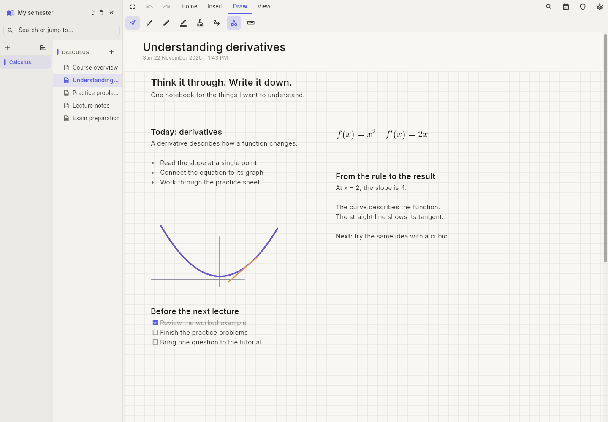
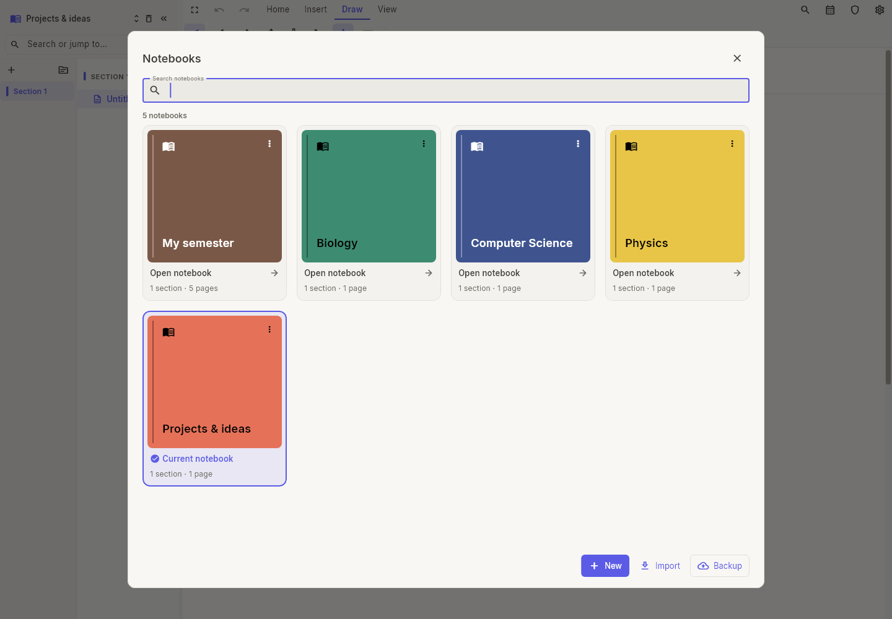
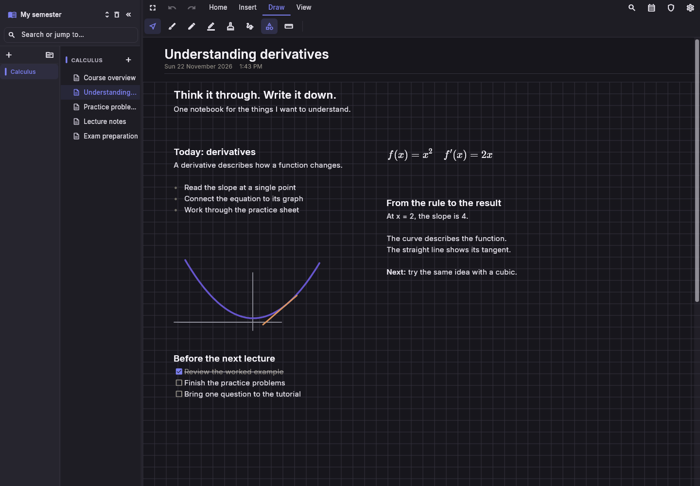
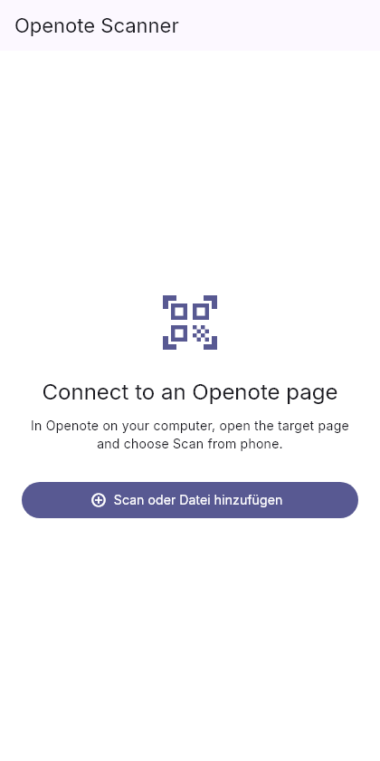
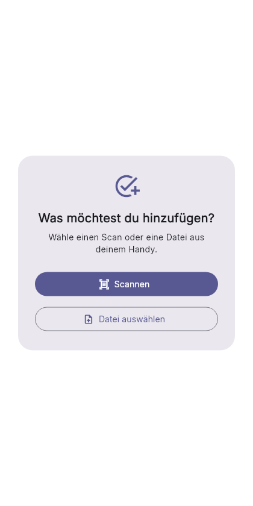

Think with your pen.
Pen, ballpoint, highlighter and a precise eraser. Pan and zoom with touch, with Windows palm rejection giving the pen priority.
A FREE, OPEN-SOURCE NOTEBOOK FOR WINDOWS
Your pen. Your PDFs. Your whole semester.
One workspace for the things you want to understand.
No account. No subscription. Your notebooks stay local.

BUILT AROUND THE WAY YOU LEARN
Openote is a free OneNote alternative for Windows devices with a pen and touchscreen. Take a handwritten lecture note, solve an exercise on a PDF, and keep the material together for the exam.
Built for school, university and the everyday work of figuring things out. If you want a GoodNotes-like way to study on Windows, start here.
Pen, ballpoint, highlighter and a precise eraser. Pan and zoom with touch, with Windows palm rejection giving the pen priority.
Bring in a PDF, mark the important part and write your solution beside it. Export the page when you need to hand it in.
Notebooks for subjects. Sections for topics. Pages and subpages for the details. A planner for assignments and exams.
Local notebooks, complete backups and exports including PDF and Markdown. No account or required cloud server.
LESS HUNTING. MORE LEARNING.
Give each subject a home. Search your notebooks, choose a cover color, and pick up where you left off. Import and backup stay within reach.

FROM HEARING TO UNDERSTANDING
Handwriting, text, equations and checklists belong on the same page. Switch tools as your thinking changes, with light and dark themes for your workspace.

For pen-enabled Windows devices, including compatible Surface, Galaxy Book 360, Yoga and ThinkPad models. Pen support and writing feel depend on your hardware.
OPENOTE SCANNER FOR ANDROID
The handout, the whiteboard, the worksheet. Bring it into the notebook you already have open.
The Android app is a companion to Openote on Windows. Scan a paper document or choose a file from your phone, then send it directly to your selected page over the local network.
Android 6 or later · APK · Both devices need a reachable local network, usually the same Wi-Fi. No cloud server required.


AN OPTIONAL STUDY PARTNER
“Explain this page.”
“Ask me questions about this chapter.”
Connect a compatible desktop AI client through MCP. Share just the current page or one selected notebook, with read-only access to text and page images including handwriting and PDF annotations.
No built-in model. You choose the client and provider. Cloud AI services process the content you send and may charge separately. Handwriting is shared as images, not searchable OCR.
How to connect your AI clientYOUR FIRST FIVE MINUTES
Install the Windows setup, open notebook management, and create a notebook, a section and a page. Here’s where the everyday tools live.
Use Home for typing and formatting. Open Draw for pen, highlighter and eraser. View controls page appearance and zoom. Explore every feature and its guide.
Open Insert to bring in PDFs, pictures, files and tables. Annotate imported PDFs with your drawing tools alongside notes and equations.
Drag pages or sections into place. Hold a page over another for half a second to preview a subpage; release to keep it or move away to cancel.
Choose Export, pick PDF, Markdown or another available format, then choose where to save it. “Save original” saves the source document.
Choose Backup, select your books and save the ZIP. Keep a copy on another drive. Use Import to restore it. The calendar icon opens your planner.
Enable access, choose a page or book, and paste the connection instructions from Copy for chat into a desktop client with local MCP support. Keep Openote open. Locked pages are excluded; access turns off after restarting. The connection text contains a secret token.
BEFORE YOU MAKE THE SWITCH
There is a limited importer for local .one and .onepkg files. Choose “Import” in notebook management. It needs the native Rust core, which the release workflow builds. Not all content or layouts are supported: check imported pages and keep your originals. Full migration and faithful editing are not guaranteed. There is no direct OneDrive connection.
Writing and working with local notebooks works offline without an account or required cloud server. Downloads, updates and external AI services need a connection. Phone transfers need a reachable local network; allow private incoming connections through the Windows firewall.
Openote is an independent, open-source option for handwriting, PDF annotation and organized study on Windows. It offers a similar kind of pen-based workspace, with its own feature set. It is not affiliated with Microsoft or GoodNotes and does not promise full feature or file-format compatibility.
The desktop installer targets Windows x64, not native Arm64. Android is a companion scanner, not a full notebook editor. Linux source remains in the repository, but Linux and macOS downloads are not currently offered.
Run the Windows setup from the latest GitHub release. On Android, open the APK and allow installation from that source if prompted. Use packages from this repository. Both apps check for new releases; you confirm installation. Android updates require the same signing key as the installed app.
Openote is free and open source. The app and scanner use AGPL-3.0-or-later; some components have separate licenses. Optional external AI providers may charge their own fees.
YOUR NEXT NOTEBOOK IS WAITING
Download buttons open the latest GitHub release. If a direct download is unavailable, choose the installer or APK under Assets.
All releases and what’s new